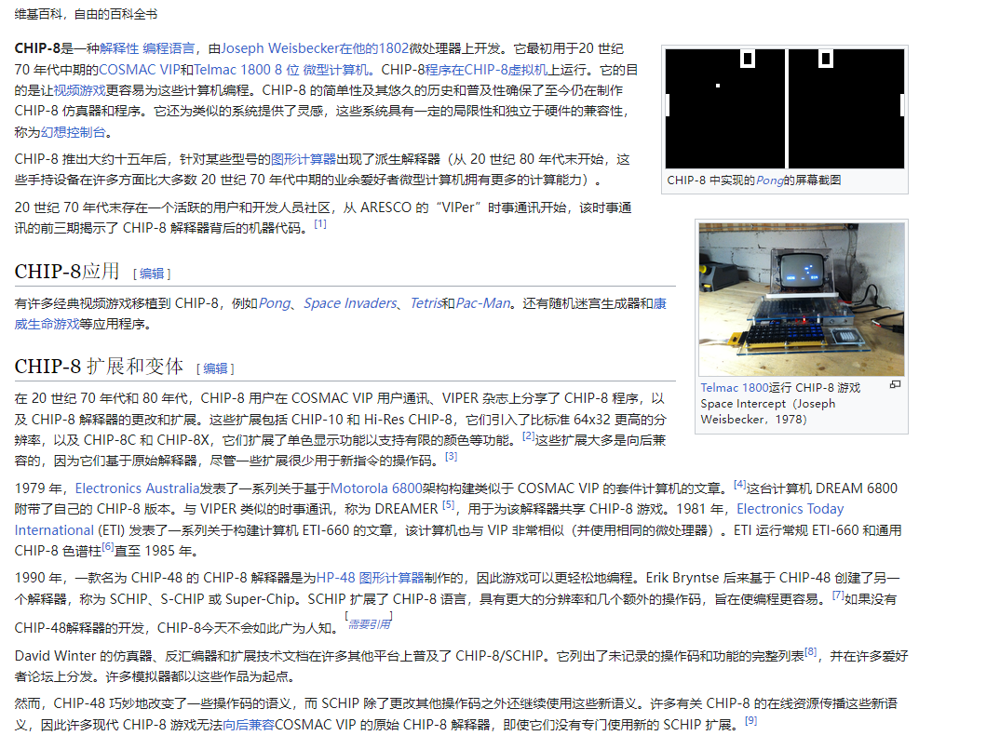
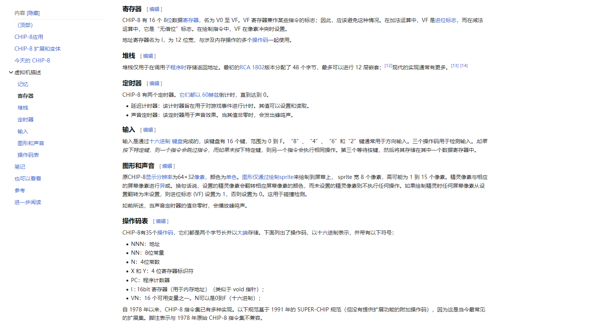
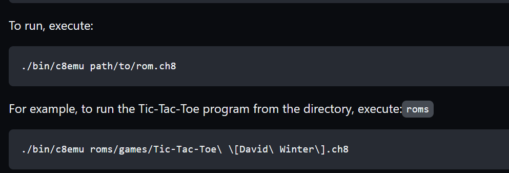
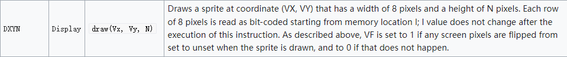
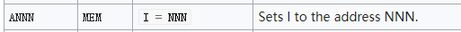
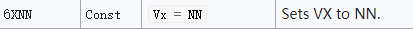
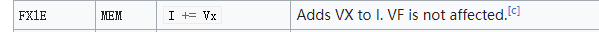
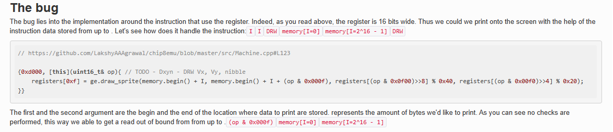
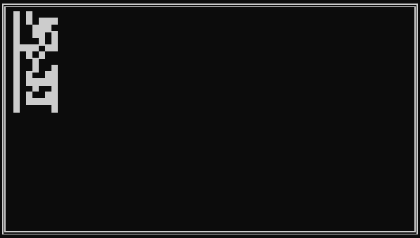
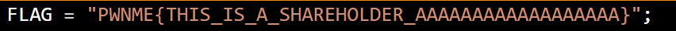

PWNmeCTF CHIP-8 复现
这种VMpwn对带🔥来说刚刚好, 而对我这个♿就有丶超前🌶️😭
0x00 材料
一个叫PWNME的比赛的一道题, 链接在这, 以下是照着wp算是复现的过程, 总之是看的想死😭
0x01 分析
拿来之后发现clone了一个仓库, 大致一看, 应该像是一个chip8语言的模拟器, 似乎也可以说是一个vm.
CHIP-8, 小查了一下:
https://en.wikipedia.org/wiki/CHIP-8

这个人的英语目前像屎所以还是要靠谷歌翻译x x
给了一个patch, 这个patch分析一下, 最主要的功能感觉应该就是把flag扔进去, 告诉你flag在这里了.
其次下面看着是调试性的语句也给加了点注释, 还有main函数里关闭缓冲的初始化性质语句.
patch里面有关flag的部分是在Machine类里面, 看一下这个类:
-
在
Machine.hpp中, 定义了一堆莫名其妙的东西, 但是可以看懂有register,stack,memory这种很熟悉的字样, 具体联系这个维基百科稍微看看:1
2
3
4
5
6
7
8
9
10
11
12
13
14
15
16
17
18
19
20
21
22
23
24
25class Machine{
private:
std::vector<uint8_t> registers; // V0-VF
std::vector<uint8_t> memory; // Memory
std::vector<uint8_t> flag;
uint16_t I; // Index register
std::vector<uint16_t> stack; // Stack
uint8_t SP; // Stack Pointer
uint8_t DT; // Delay Timer
uint8_t ST; // Sound Timer
GraphicEngine ge; // Holds Graphics and frame buffer
Keyboard kb; // presents Keyboard related functions
uint16_t PC; // Program Counter
std::chrono::steady_clock::time_point last_tick;
// Methods
void execute(uint16_t& opcode);
uint8_t random_byte();
void print_machine_state();
void update_timers(const std::chrono::steady_clock::time_point& now);
public:
Machine();
void setInst(std::vector<uint8_t>& prog, uint16_t start_addr);
void runLoop();
};
对比看一下可以大致明白是个什么东西了, 感觉里面这个I应该是比较重要的东西之一
-
然后是
Machine.cpp,1
2
3
4
5
6
7
8
9
10
11
12Machine::Machine(){
registers = std::vector<uint8_t>(16, 0);
stack = std::vector<uint16_t>(32, 0);
memory = std::vector<uint8_t>(4096, 0);
flag = std::vector<uint8_t>(128, 0);
PC = 0x200;
last_tick = std::chrono::steady_clock::now();
I = 0;
SP = 0;
DT = 0;
ST = 0;
}
这个应该是Machine的构造函数, 16个寄存器, 大小为32的栈和4096(0x1000)的内存, PC可以从上面知道是程序的计数器, 所以似乎是从0x200开始的.
内存过后直接是flag, 所以可能思路就是越界到flag
0x02 过程+利用
刚才把他到底是什么东西分析了个大概, 现在开始看怎么跑, 跑什么东西
给的dockerfile里面跑的是wrapper, wrapper实际跑一下, 感觉实际作用就是传入一个ROM code.
这个rom应该和 ↓应该是同一套的东西

给了wrapper.c, 大概看了一下发现确实是这样的, 这个rom code会传进这一套文件里.
在这里传进的ROMcode再分析一下会发现实际上应该也就是后续的opcode?但是不管怎样, 这里是唯一的输入了
opcode应该算是控制vm的一些代码了, 这个题由于有着chip-8的背景, opcode可以说完全透明.
漏洞和利用的话, 似乎这个题的漏洞相对来说属于很简单的, 根据分析可以知道flag就在内存块的后面, 所以应该是一个越界的漏洞, 但是实际上跑了一下, 发现除了一块黑框, 完全没有什么输出.
之前没patch瞎鼓捣的时候发现会有一些信息出来, 但是patch过后如上面所说, 调试信息是关闭的, 打不出来东西, 起初我以为是我的步骤哪里出问题以至于把这玩意玩坏了,后来发现并不是这样.
但是翻一下opcode表会发现有一个很奇怪的东西:

于是这个题的flag的输出方式疑似是很匪夷所思的用这个黑框画出来, 这条opcode是从I开始读, 所以我们只需要让I等于我们的flag地址即可, flag地址是0x1010.
主要可以利用以下几个命令:



这个地方直接拿百科上查到的了, 和在.cpp文件里看到的opcode几乎没有任何差别,
然后找到一篇文章, CTFtime.org / PwnMe Qualifications : “8 bits” / chip8 / Writeup , 疑似是官方的wp?
应该是个很不错的解释:
-
Here are the instruction we need:
Annn-LD I, addr. Set I = nnn. The value of register I is set to nnn.6xkk-LD Vx, byte, Set Vx = kk. The interpreter puts the value kk into register Vx.Fx1E-ADD I, Vx. Set I = I + Vx. The values of I and Vx are added, and the results are stored in I.Dxyn-DRW Vx, Vy, nibble. Display n-byte sprite starting at memory location I at (Vx, Vy), set VF = collision. The interpreter reads n bytes from memory, starting at the address stored in I. These bytes are then displayed as sprites on screen at coordinates (Vx, Vy). Sprites are XORed onto the existing screen. If this causes any pixels to be erased, VF is set to 1, otherwise it is set to 0. If the sprite is positioned so part of it is outside the coordinates of the display, it wraps around to the opposite side of the screen. See instruction 8xy3 for more information on XOR, and section 2.4, Display, for more information on the Chip-8 screen and sprites.
1
2
3
4n or nibble - A 4-bit value, the lowest 4 bits of the instruction
x - A 4-bit value, the lower 4 bits of the high byte of the instruction
y - A 4-bit value, the upper 4 bits of the low byte of the instruction
kk or byte - An 8-bit value, the lowest 8 bits of the instruction

这篇文章的写法, “由于I是16位寄存器, 故这个draw指令可以打印出xxx内存的东西”,自然包括0x1010
0x03 exp
1 | |
分段改偏移, n位是f所以一次打0xf个字节的东西, 0xf乘以偏移改一下, 分次画flag就行了.
最后出现的结果大概like this(一共有4截):

就是 这个东西:

0x04 后话
第一次系统的做了一整道VMpwn题, wings说普遍的vm题难度在逆向上, 这道题由于源码, opcode什么的全部给出, 并且利用是一个相对显而易见的越界, 所以我事后感觉这算是一个很简单的vm题, 只需要翻翻查查找到相关资料理解一下就行, 整个复现过程下来也稍微对vm题的过程有了一些实地感受, 要弄清楚内存, 寄存器等等东西的构造, 甚至可能还要理解opcode, 看着就像一个re人该做的事, 更多偏向于读代码加调试, 听起来也比较烦人😕
唉 很简单的题 但一整篇都是溜着wp摸索下来的 我怎么这么菜啊😭